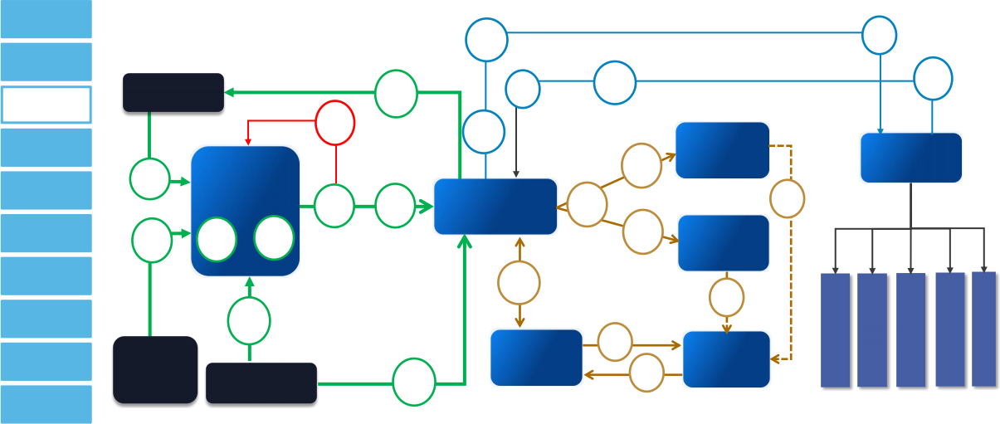

电子档案收集整编 |
档案管理/档案保存 |
档案利用 |
电子档案长久保存 | |||
下属单位
审核退回 |
EEP 封装 |
接收
数据 读取
长久保存库
数 任 预 资 据 务 警 源 …
理 理 理 理 | ||||
移交 清册 |
四性 接收 检测 | |||||
四性 检测 电 阅 |
子 览
子 览
卷 |
档案利用
移动端 档案利用
流程
实体 档案借阅 |
流程 | |||
数据 录入 电子档案 收集整编 数据 接口
成果 导入
钉钉OA智 能财务 用友/金蝶 | ||||||
利用 流程
电阅 | ||||||
融合 | ||||||
调卷 实体档案 辅助管理 成果 导入 | ||||||
电子会计档案管理-系统业务模型

政策背景
企业现状
系统设计
档案采集
档案整理
档案保管
档案利用
档案检索
档案统计
管 管 管 管
档案配置
数字化加工
馆藏资源管理
整理检测
检测入库
在线移交
审核接收
还